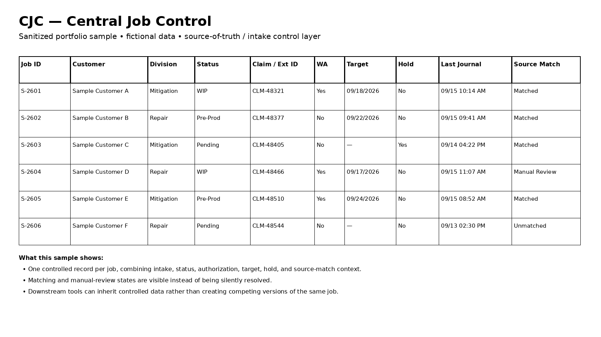
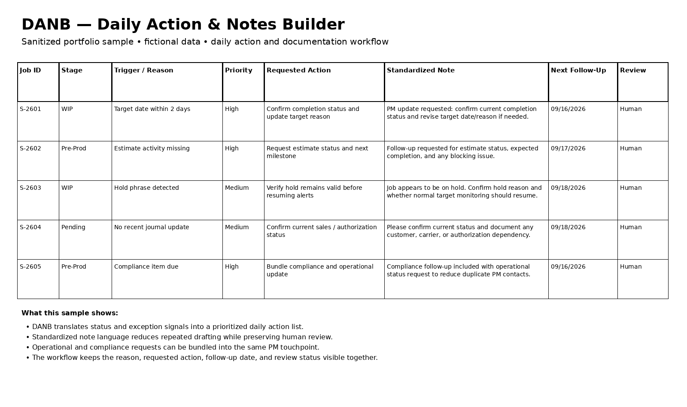
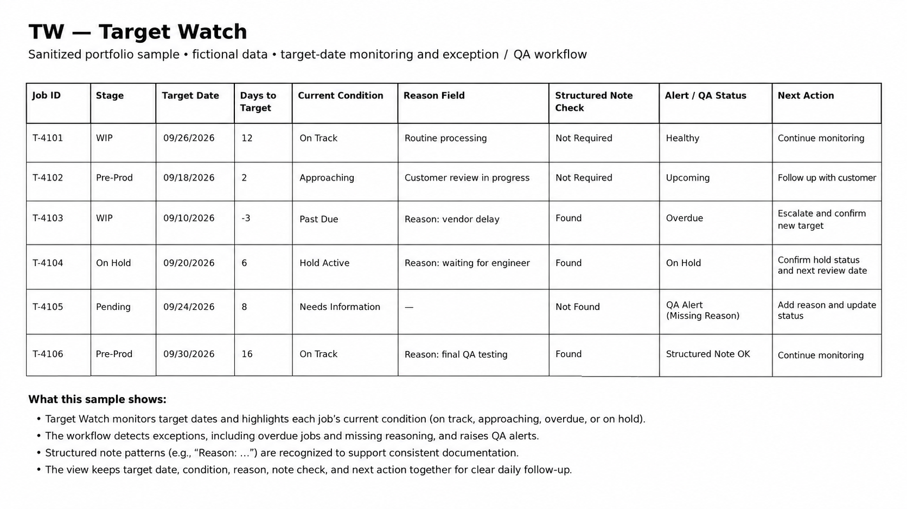
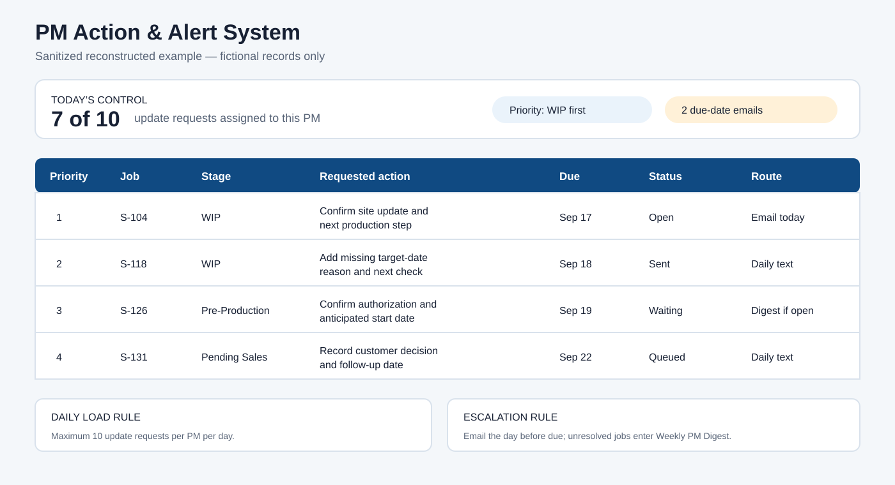
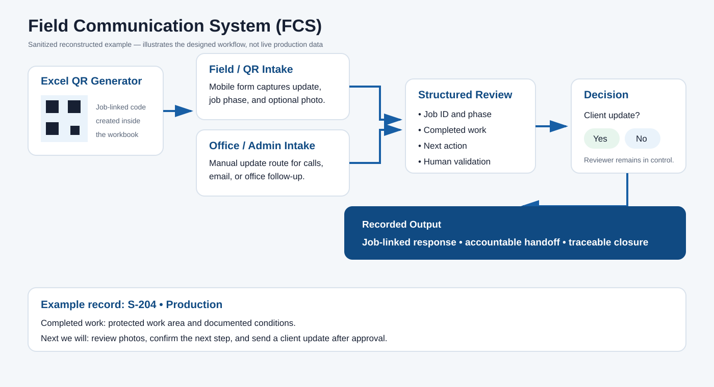
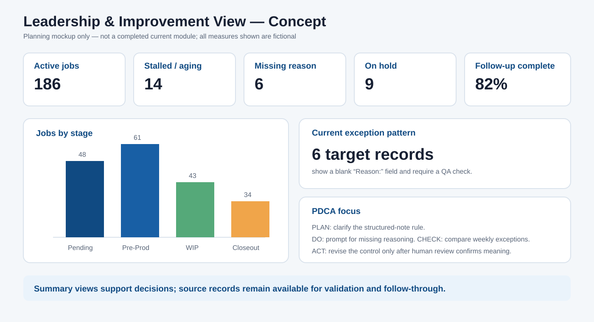

Evidence-backed case study
Production Control & Communication System
A connected, human-reviewed operating system that turns scattered project information into clear actions, accountable follow-up, communication traceability, and management learning.
Privacy note: All examples below are sanitized or reconstructed. Names, job identifiers, addresses, contacts, claim details, and insurer data are fictional.
Reported operational impact
Up to 200active projects supported
Up to 3 hrs/dayreduced manual checking
≈4 hrs/weeksaved in Target Watch review
+35% CSATover three months in the broader workflow
Source of truth → action → monitoring → communication → learning
Evidence by module
Each artifact shows a distinct job in the system. Modules share controlled data and rules without becoming competing versions of the same record.
Central Job Control (CJC)
The administrative hub reconciles intake, status, target dates, holds, matching, source history, and manual overrides before information flows downstream.

ProblemDifferent sources and identifiers created duplicate entry and conflicting job truth.
ControlSource matching, preserved history, controlled status logic, and visible manual overrides.
DemonstratesData governance, business rules, exception handling, and source-of-truth design.
Daily Action & Notes Builder (DANB)
DANB translates controlled project information into today’s work: why an item needs attention, the requested action, a standardized note, and the next follow-up.

ProblemRepeated review and note preparation consumed hours and produced inconsistent follow-up.
ControlFocused daily queues with human review, exception handling, and manual override.
DemonstratesWorkflow automation, documentation controls, decision support, and efficiency.
Target Watch (TW)
Target Watch reverse-engineers embedded scheduling rules and note conventions into a visible exception-control workflow for approaching, overdue, held, and incomplete targets.

ProblemTarget logic lived in habits and note patterns, making schedule surveillance inconsistent.
ControlStructured date patterns, hold recognition, missing-reason QA alerts, and manual review.
DemonstratesReverse engineering, requirements discovery, monitoring, and QA controls.
PM Action & Alert System
A workload-aware queue prioritizes WIP, then Pre-Production, then Pending Sales. It sends no more than 10 update requests per PM per day, emails the day before an item is due, and carries unresolved work into the Weekly PM Digest.

ProblemLarge request dumps overloaded project managers and made urgent items easier to miss.
ControlStage priority, daily request cap, due-date email, response status, and weekly escalation.
DemonstratesWorkload design, compliance operations, prioritization, and change management.
Field Communication System (FCS)
FCS provides two controlled entry paths: a field/QR form for mobile updates and a manual office/admin route. Both produce a traceable response tied to fictional job context. The recorded update and review trail also forms an existing leadership-visibility vein without requiring a separate dashboard.

ProblemRequests and updates were scattered across calls, texts, and office follow-up.
ControlExcel QR generator, structured intake, office review, client-update decision, and recorded closure.
DemonstratesCommunication workflow design, traceability, coordination, and user-centered operations.
Leadership & Improvement View — Concept
Status: planned standalone view, not a completed current module. The earlier Leadership View belonged to the old Note Engine and has not been developed since the Note Builder moved into DANB. Leadership visibility currently exists through the FCS communication trail and controlled source records.
The intended future view would turn controlled operational activity into patterns without hiding the records underneath it. The visual below is explicitly a concept mockup, not implementation evidence.

NeedTransactional activity alone does not reveal system health or recurring bottlenecks.
Proposed controlFuture summaries should link to source detail and preserve human interpretation.
Concept demonstratesKPI planning, management-reporting design, and PDCA thinking—not a finished build.
Human-reviewed by design. Automation and AI may organize information, identify patterns, and draft communication. People validate sources, resolve exceptions, approve outputs, and retain final authority.